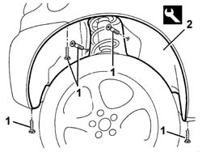

7055B45 right hand rear supplementary wheel arch - r+r
- Path
- Procedures > 70 FITTINGS > 7055 MOULDING AND PROTECTION > 7055B exterior protections > 7055B45 right hand rear supplementary wheel arch - r+r
- Kind
- repair procedure (removal / refitting; the operation number is the code)
- Applies to
- all engines; all production periods
- Interactive page
- https://sloeber94.github.io/elrnDB-a147/en/#/3025914
Applies to: all engines; all production periods
 Removing
Removing
 Refitting
Refitting7055A30 l/h or r/h side rubbing strip (one) - r+r
1. Undo the wheelarch bolts.
2. Using the special tool, detach the wheel arch and remove it.
 | Name | Country |
|---|---|---|
2 | Scraper blade | 1.823.015.000 |

Applies to: all engines; all production periods
Refitting
RemovingCheck that the wheelarch is undamaged.
Fit the additional wheelarch.
Tighten the screws.